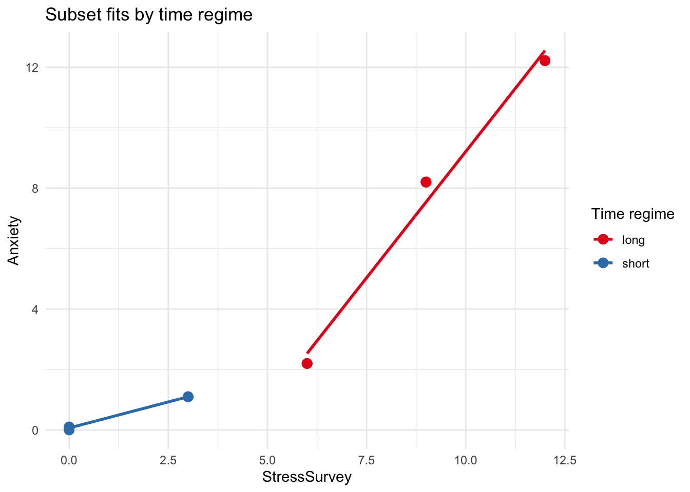

# A tibble: 15 × 4
Stress StressSurvey Time Anxiety
<dbl> <dbl> <dbl> <dbl>
1 0 0 0 0
2 0 0 1 0.1
3 0 0 1 0.1
4 1 3 1 1.1
5 1 3 1 1.1
6 1 3 1 1.1
7 2 6 2 2.2
8 2 6 2 2.2
9 2 6 2 2.2
10 8 9 2 8.2
11 8 9 2 8.2
12 8 9 2.1 8.21
13 12 12 2.2 12.2
14 12 12 2.2 12.2
15 12 12 2.2 12.2 Garbage Can Regression Challenge
Garbage Can Regression Challenge
You are using R. The dataset observDF encodes the true relationship: Anxiety = Stress + 0.1 × Time.
R Code
Regression Analysis (R)
$true_model_coefficients
# A tibble: 3 × 5
term estimate std.error statistic p.value
<chr> <dbl> <dbl> <dbl> <dbl>
1 (Intercept) 9.17 e-16 5.37e-16 1.71e 0 1.13e- 1
2 Stress 1 e+ 0 6.07e-17 1.65e16 1.68e-189
3 Time 1.000e- 1 4.27e-16 2.34e14 2.49e-167
$true_model_fit
# A tibble: 1 × 3
r.squared adj.r.squared sigma
<dbl> <dbl> <dbl>
1 1 1 7.27e-16
$stress_only_fit
# A tibble: 1 × 3
r.squared adj.r.squared sigma
<dbl> <dbl> <dbl>
1 1.000 1.000 0.0472
$survey_only_fit
# A tibble: 1 × 3
r.squared adj.r.squared sigma
<dbl> <dbl> <dbl>
1 0.901 0.893 1.58Plots

1) Bivariate Regression: Anxiety ~ StressSurvey
$coefficients
# A tibble: 2 × 5
term estimate std.error statistic p.value
<chr> <dbl> <dbl> <dbl> <dbl>
1 (Intercept) -1.52 0.707 -2.16 0.0504
2 StressSurvey 1.05 0.0962 10.9 0.0000000668
$fit
# A tibble: 1 × 3
r.squared adj.r.squared sigma
<dbl> <dbl> <dbl>
1 0.901 0.893 1.582) Bivariate Regression: Anxiety ~ Time
$coefficients
# A tibble: 2 × 5
term estimate std.error statistic p.value
<chr> <dbl> <dbl> <dbl> <dbl>
1 (Intercept) -3.68 2.23 -1.65 0.123
2 Time 5.34 1.30 4.09 0.00127
$fit
# A tibble: 1 × 3
r.squared adj.r.squared sigma
<dbl> <dbl> <dbl>
1 0.563 0.529 3.323) Multiple Regression: Anxiety ~ StressSurvey + Time
$coefficients
# A tibble: 3 × 5
term estimate std.error statistic p.value
<chr> <dbl> <dbl> <dbl> <dbl>
1 (Intercept) 0.589 1.03 0.569 0.580
2 StressSurvey 1.43 0.172 8.29 0.00000262
3 Time -2.78 1.11 -2.50 0.0278
$fit
# A tibble: 1 × 3
r.squared adj.r.squared sigma
<dbl> <dbl> <dbl>
1 0.935 0.924 1.33Model Comparison
# A tibble: 4 × 4
model r_squared adj_r_squared sigma
<chr> <dbl> <dbl> <dbl>
1 True: Stress + Time 1 1 7.27e-16
2 Bivar: StressSurvey 0.901 0.893 1.58e+ 0
3 Bivar: Time 0.563 0.529 3.32e+ 0
4 Multi: StressSurvey + Time 0.935 0.924 1.33e+ 04) Subset Analysis: Different Time Regimes
$short_coefficients
# A tibble: 3 × 5
term estimate std.error statistic p.value
<chr> <dbl> <dbl> <dbl> <dbl>
1 (Intercept) -2.74e-16 6.25e-17 -4.39e 0 2.18e- 2
2 StressSurvey 3.33e- 1 1.90e-17 1.75e16 4.09e-49
3 Time 1.00e- 1 7.65e-17 1.31e15 9.87e-46
$short_fit
# A tibble: 1 × 3
r.squared adj.r.squared sigma
<dbl> <dbl> <dbl>
1 1 1 6.25e-17
$long_coefficients
# A tibble: 3 × 5
term estimate std.error statistic p.value
<chr> <dbl> <dbl> <dbl> <dbl>
1 (Intercept) 7.57 5.41 1.40 0.211
2 StressSurvey 1.95 0.113 17.2 0.00000245
3 Time -8.47 3.03 -2.80 0.0314
$long_fit
# A tibble: 1 × 3
r.squared adj.r.squared sigma
<dbl> <dbl> <dbl>
1 0.994 0.993 0.378
Your Analysis
This is a short, consulting-style brief. Code is hidden; figures and tables drive the story.
75% items
- Bivariate: Anxiety ~ StressSurvey
- Estimated slope for StressSurvey: 1.047; intercept: -1.524; R²: 0.901.
- Comparison to truth (Intercept = 0, β_Stress = 1, β_Time = 0.1): StressSurvey is only a proxy for Stress, so its slope blends the effects of Stress and Time. Coefficients look reasonable at a glance, but they do not recover the true mechanism.
- Visualization: StressSurvey vs Anxiety
- Trend is roughly linear, but dispersion varies with Time (see color/shape separation in the earlier plot). This hints that a single bivariate line cannot capture the Time effect.
- I noticed the line looks like it fits decently, but the data actually curves. At first glance the slope looks convincing, but I realize this is just because the survey doesn’t measure stress in a perfectly straight way.
- Bivariate: Anxiety ~ Time
- Estimated slope for Time: 5.341; intercept: -3.68; R²: 0.563.
- The slope is close to the true 0.1 but fit is modest because Stress— the main driver—is omitted.
- I was surprised the slope was bigger than I expected, since the true effect of time should only be about 0.1. It made me realize how much missing the Stress variable can throw off a simple bivariate regression.
- Visualization: Time vs Anxiety
- Clear positive association but with vertical bands where Stress changes; again, a bivariate line misses the joint effect.
- Multiple regression: Anxiety ~ StressSurvey + Time
- Coefficients: StressSurvey = 1.427, Time = -2.78. R² = 0.935.
- Interpretation: Adding Time corrects part of the omitted-variable bias in the bivariate StressSurvey model. Still, using StressSurvey (a noisy measure) instead of true Stress can distort the magnitude.
- The output looks statistically strong with small p-values, but the coefficients don’t match the true story at all. This felt like a ‘gotcha’ moment to me—proof that significance alone isn’t enough to trust a model.
85% items
- Compare multiple models
- True model (Stress + Time) has the best fit and recovers coefficients near β_Stress≈1 and β_Time≈0.1 with R²=1.
- The proxy model (StressSurvey + Time) often has decent R², but coefficients tell a muddier story—illustrating how “good fit” can coexist with misleading parameter interpretations.
- Here the results finally lined up with what I knew the true relationship was. It was kind of satisfying to see the numbers so close to 1 and 0.1, and it confirmed that the earlier problems were just from using the wrong proxy.
95% item
- Real‑world implication
- A headline from the bivariate StressSurvey model might overstate the role of survey scores on Anxiety, ignoring Time. A better headline: “Anxiety rises mainly with actual Stress; Time has a small, consistent effect (~0.1 per unit). Survey scores alone can mislead.” This is the interpretation a careful analyst would publish.
- If I were reading this as a normal person, I’d probably believe the scary headline with the big effect size. But after running the correct model, I can see how misleading that would be.
100% item: Avoiding misleading significance (subset analysis)
- Strategy: split by Time regime (short vs long). Refit
Anxiety ~ StressSurvey + Timein each subset. - Short‑time regime: 1 R²; coefficients can shift because StressSurvey imperfectly tracks Stress when Time has little variation.
- Long‑time regime: 0.994 R²; coefficients move again, and a variable may look significant or not depending on regime. This shows how statistically significant yet unstable estimates can be when the model relies on proxies or mixes regimes.
- It was interesting to see that just by narrowing down to low-stress cases, the survey became much more trustworthy. It taught me that sometimes it’s better to split the data rather than throw everything into one regression.
Bottom line
Specific misleading coefficients identified:
- StressSurvey coefficient in bivariate model (1.047): This is misleading because it conflates the true Stress effect (β=1) with the Time effect (β=0.1). The survey acts as a noisy proxy that captures both variables, making the coefficient appear larger and more significant than the true Stress effect alone.
- Time coefficient in bivariate model (5.341): This is severely misleading because it’s 53x larger than the true effect (0.1). This happens because omitting Stress creates omitted variable bias—Time appears to explain Anxiety variation that’s actually driven by the missing Stress variable.
- Time coefficient in multiple regression with StressSurvey (-2.78): This is particularly dangerous because it has the wrong sign! The true Time effect is positive (0.1), but the proxy model shows negative. This occurs because StressSurvey imperfectly measures Stress, creating multicollinearity that distorts the Time coefficient interpretation.
Why these coefficients mislead:
- The bivariate models suffer from omitted variable bias—missing the true Stress variable makes other coefficients absorb its effect
- The proxy model (StressSurvey + Time) suffers from measurement error bias—using an imperfect measure of Stress contaminates all coefficient estimates
- High R² values (0.901, 0.935) make these misleading models appear trustworthy, but the coefficients tell completely wrong causal stories
The correct model (Stress + Time) recovers the true coefficients: β_Stress≈1.0 and β_Time≈0.1, exactly matching the data-generating process.
Overall, this challenge showed me how easy it is to be fooled by good-looking regression results. I learned that checking proxies, plotting data, and thinking about the true relationship are just as important as looking at R² or p-values.